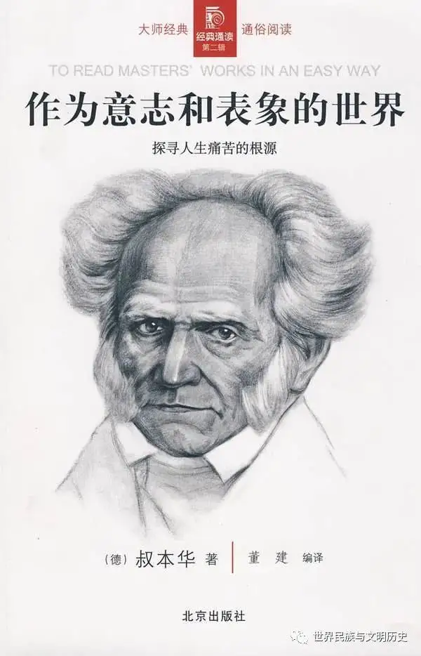

Main works
Some selected works:

(Written in 1819.)
(Written in 1813.)
(Written in 1850.)
- Book1 contains all the details of Schopenhauer's philosophy. Schopenhauer spent his long life merely explaining or supplementing it. This book created a major school in the history of modern Western Philosophy - voluntarism, and Schopenhauer was only 28 years old when he finished this book. This work later influenced Nietzsche, Wagner, Thomas Mann and even existentialism.
- In book2, Schopenhauer suggests that the establishment of logical truth must have a priori truth before it, which is the second form of the expression of the law of sufficient reason. Schopenhauer divides the ways leading to truth into logical, empirical, transcendental and superlogic. These four reasons and grounds not only prove the truth itself, but also show the law of sufficient reason. Schopenhauer regards human behavior motivation as the fourth form of sufficient reason law. In other words, every human behavior must have its motivation roots, and be explained from the motivation.
- In book3, Schopenhauer, who was over 60 years old, fused his life experience, the basic tenets of Buddhism and the philosophy of life in Europe, and created a unique philosophy of life with sadness and joy. The two major enemies of life ------ distress and poverty create pain, while peace and prosperity produce boredom: "neither pain nor boredom, in essence, realizes the happiness of the world."